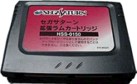
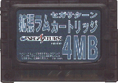
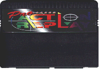
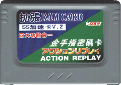
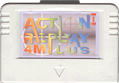
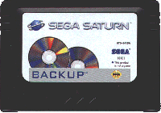
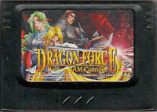
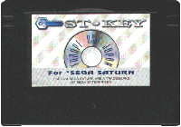

Saturn - Cartuchos do Saturn
 :::. Por Gigacom - Quando
a galerinha viu o Saturn pela primeira vez, notaram logo de cara a
entrada de cartuchos no console. Suspeitava-se que a Sega iria
lançar algum conversor para utilizar jogos do Mega Drive, ou que o console pudesse ser compativel com o 32X, mas
logo se viu que o destino daquela entrada seria outro...
:::. Por Gigacom - Quando
a galerinha viu o Saturn pela primeira vez, notaram logo de cara a
entrada de cartuchos no console. Suspeitava-se que a Sega iria
lançar algum conversor para utilizar jogos do Mega Drive, ou que o console pudesse ser compativel com o 32X, mas
logo se viu que o destino daquela entrada seria outro...
__________________________________________________________________________
Uma coisa que os projetistas da Sega sempre tinham em mente, era dar capacidade aos consoles da empresa de receberem add-ons que possibilitassem o aumento da capacidade do hardware do console, ou mesmo os transformassem em outros video games. Foi o que vimos acontecer com o Mega Drive que recebeu o 32X, o Sega CD e o Master Converter. O Master System tambem tinha uma porta de expansão, que pode ser usada por exemplo para se instalar uma placa de som FM. O Saturn seguiu o mesmo caminho, e já saiu de fabrica com duas portas de expansão: uma em formato de cartucho e a outra interna. Houve vários tipos de cartuchos lançados, porém apenas alguns poucos oficiais, o resto ou eram fabricados por third parties ou por empresas picaretas lá da China . Conheça agora os principais cartuchos!
. Conheça agora os principais cartuchos!
 1 MB RAM: cartucho de expansão de 1 MB de RAM. Possibilitava a execução de jogos mais parrudinhos como o Metal Slug, cuja versão para Saturn é igualzinha ao Arcade (só a trilha sonora é que é um pouquinho melhor ). Outros jogos tambem fizeram uso desse cartucho como o Marvel Super Heroes, apesar deste jogo rodar sem precisar desse cartucho. Ah sim, esse é oficial fabricado pela SEGA.
). Outros jogos tambem fizeram uso desse cartucho como o Marvel Super Heroes, apesar deste jogo rodar sem precisar desse cartucho. Ah sim, esse é oficial fabricado pela SEGA.
 4 MB RAM: o cartucho mais maravilhindo da face da Terra. A expansão maxima da memoria do Saturn por meios oficiais veio através deste cart. Expandia a memória RAM do video game, acresentando mais 4 preciosos meguinhas. Possibilitava a execução de uma infinidade de excelentes jogos, entre os quais se destacam Street Fighter Zero 3, Marvel vs Capcom e The King of Fighters 98, todos identicos as versõews arcade. Ele seria utilizado para a versão de Shenmue do Saturn que nunca foi lançada.
 Action Replay Pro: e disse Deus - que haja um concorrente de peso ao Game Shark, para que este não domine o mundo e controle sozinho os video games. E assim nasceu o Action Replay. Esta é a primeira versão do AR para o Saturn. Apesar de não espandir a memoria ram, possui uma memória flash programavél para armazenar os códigos. Servia tambem para rodar jogos de outras nacionalidades que não a original do console. É compativel com todos os Saturns. Obvio, esse cartucho não era oficial... possuia porta de comunicação com computadores para atualização do software.
Action Replay 1MB: o começo do super quebra galho começou nesse cartucho. Expandia a memoria RAM do video game somando mais 1 meguinha ao total, tinha memoria flash para armazenar os códigos de trapaça, servia para rodar games de outras nacionalidades e... e... era feio pra burro! Não possuia porta de comunicação. Somente alguns seres privilegiados viram um desses ao vivo, hoje em dia encontrar um igualzinho ao da foto é mais dificil que ganhar na Mega Sena... duas vezes.
Action Replay 4MB Plus: o supra sumo dos Actions Replay! Fazia tudo! Até café! Expandia a memoria RAM do Saturn somando mais 4MB ao total, possuia memoria flash para armazenar códigos, tinha porta de comunicação com PC, rodava games de outras nacionalidades e era bonitinho que só. Esse modelo foi até bem vendido lá na Europa, e muitos foram importados para o Brasil. Não é dificil encontrar um desses para compra... o dificil é comprar, pois são geralmente vendidos à horrores! Quase tão caros quanto um Saturn usado!
 Backup Ram: o Playstation tem memory card, o Saturn possui além da memória interna esse cartuchão aí para armazenar os saves dos jogos. Oferecia 16x mais espaço para salvar jogos do que a memória interna do console. Constituido de memória flash, dispensa o uso de baterias. É compativel com todos os Saturns, independente da nacionalidade ou marca (Hi-Saturn por exemplo, aceita este cartucho numa boa). Foi muito vendido no Japão, porém a versão japonesa vinha num cartucho branco. No ocidente, não teve muito sucesso... alias, mal se via isso à venda...
Dragon Force Backup RAM: o Dragon Force utiliza uma porção bem consideravel da memória interna do Saturn para salvar o progresso do jogo. Esse cartucho foi lançado com o intuito de evitar isso. Era oficial e fabricado pela propria Sega, e servia muito bem para uso em outros jogos. O bacana é que com esse cartucho, não é preciso esperar um turno do jogo para salvar o progresso, você pode simplesmente, a qualquer ponto da partida, salvar tudo! Você nunca viu um desses certo? Pois é, isso porque ele era vendido em um pacote especial junto com o jogo no Japão...
 ST-Key: um dos mais conhecidos cartuchos de Saturn por essas bandas do mundo. Permitia a qualquer Saturn rodar CDs de qualquer nacionalidade. Não era um cartucho oficial, mas funcionava perfeitamente. Já tive um desses, e por dentro não há misterio algum: é um simples cartucho formado por dois chips EPROM (aqueles antigos, com uma janelinha). Com esse cartucho no console, após aquela primeira imagem que aparece na tela dos triangulos que formam o logo do Saturn, aparece uma imagem preta com o nome ST-KEY em azul antes de iniciar o jogo.
Bem, esses são os principais cartuchos do Saturn. Houveram alguns outros porém todos de origem chinesa e de qualidade duvidosa... Alguns faziam a mesma coisa que o Action Replay Plus, porém não eram confiavéis. A maioria morreu com o tempo... Hoje só se encontra esses citados aí em cima, sendo que, na minha opnião, o mais útil é o Action Replay Plus, porém o de maior qualidade é o cartucho de 4MB oficial da Sega.
Acesse o Trombone e comente sobre essa matéria!


Que tal acessar a sua conta do banco, com todo o conforto e comodidade de sua casa? Para isso, o pai de familia iria precisar do Telebradesco, um cartucho especial fabricado com exclusividade pela Tec Toy para o Bradesco; e tambem iria precisar pegar emprestado o Mega Drive do muleque para acessar...